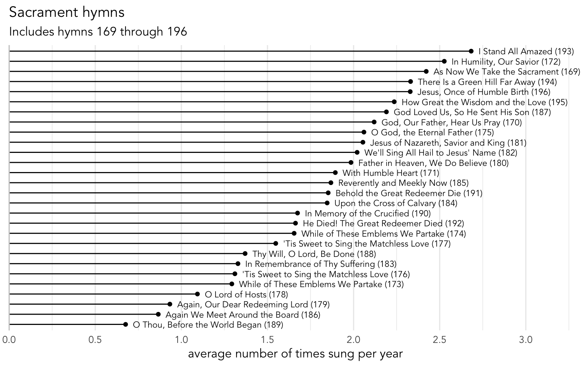
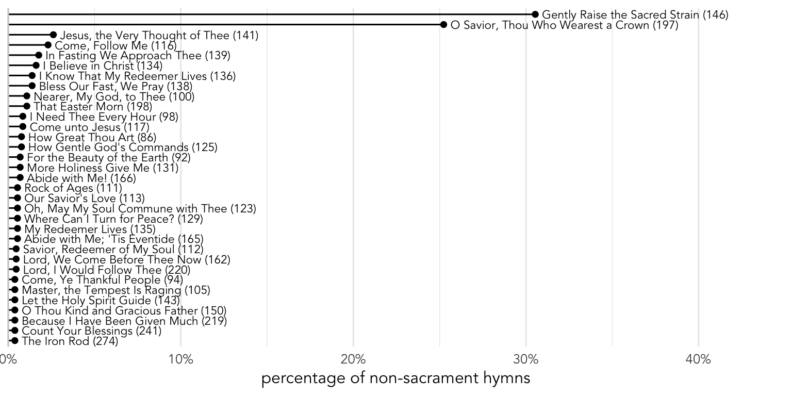

What are the most and least common Sacrament Hymns?
sacrament
frequency
In this post, I dive into just the canonical sacrament hymns (i.e. hymns 169–196).
We’ll start off by looking at sacrament hymns, or rather, the hymn sung immediately before the sacrament is blessed and passed to the congregation. As far as I can tell, §19.3.2 of the General Handbook has the only instruction about sacrament hymns, and it says that “[t]he sacrament hymn should refer to the sacrament itself or to the sacrifice of the Savior.” This instruction is repeated on page 380 of the hymnal.
In the hymnal, sacrament hymns go from 169 (
In fact, I’ve had church leaders enforce this constraint. I was in a ward where a newly-called music coordinator chose reverent hymns that were outside of that range. After about two weeks, the bishop announced that we’d be singing a different hymn than what was listed on the program and he changed it to a sacrament hymn. Presumably he later explained the policy to the chorister afterwards because we sang “true” sacrament hymns from then on.
As I’ve written already),
Frequency
Let’s take a closer look at the sacrament hymns themselves. In theory, if a ward were to systematically cycle through all the sacrament hymns, they’d make it through all of them in a little over six months. However, this plot shows that they’re definitely not all sung equally as often as each other.
Many plots throughout this blog are formatted just like this one here. Hymns that are less common are in the lower left and hymns that are more common are in the upper right. The numbers along the bottom refer to how many times, on average, a ward will sing that hymn within a given year.
Click to show the summarized data
| Rank | Title | Number | n | Average per year | Every X weeks | Every X months | Every X years |
|---|---|---|---|---|---|---|---|
| 1 | I Stand All Amazed | 193 | 1003 | 2.700 | 17.780 | 4.445 | 0.370 |
| 2 | In Humility, Our Savior | 172 | 911 | 2.452 | 19.575 | 4.894 | 0.408 |
| 3 | Jesus, Once of Humble Birth | 196 | 877 | 2.361 | 20.334 | 5.084 | 0.424 |
| 4 | There Is a Green Hill Far Away | 194 | 862 | 2.320 | 20.688 | 5.172 | 0.431 |
| 5 | As Now We Take the Sacrament | 169 | 829 | 2.231 | 21.511 | 5.378 | 0.448 |
| 6 | How Great the Wisdom and the Love | 195 | 799 | 2.151 | 22.319 | 5.580 | 0.465 |
| 7 | God Loved Us, So He Sent His Son | 187 | 757 | 2.038 | 23.557 | 5.889 | 0.491 |
| 8 | God, Our Father, Hear Us Pray | 170 | 756 | 2.035 | 23.589 | 5.897 | 0.491 |
| 9 | O God, the Eternal Father | 175 | 748 | 2.013 | 23.841 | 5.960 | 0.497 |
| 10 | We’ll Sing All Hail to Jesus’ Name | 182 | 743 | 2.000 | 24.001 | 6.000 | 0.500 |
| 11 | Jesus of Nazareth, Savior and King | 181 | 740 | 1.992 | 24.099 | 6.025 | 0.502 |
| 12 | Father in Heaven, We Do Believe | 180 | 735 | 1.978 | 24.263 | 6.066 | 0.505 |
| 13 | Upon the Cross of Calvary | 184 | 665 | 1.790 | 26.817 | 6.704 | 0.559 |
| 14 | With Humble Heart | 171 | 663 | 1.785 | 26.897 | 6.724 | 0.560 |
| 15 | Behold the Great Redeemer Die | 191 | 663 | 1.785 | 26.897 | 6.724 | 0.560 |
| 16 | Reverently and Meekly Now | 185 | 661 | 1.779 | 26.979 | 6.745 | 0.562 |
| 17 | While of These Emblems We Partake | 174 | 599 | 1.612 | 29.771 | 7.443 | 0.620 |
| 18 | In Memory of the Crucified | 190 | 599 | 1.612 | 29.771 | 7.443 | 0.620 |
| 19 | He Died! The Great Redeemer Died | 192 | 584 | 1.572 | 30.536 | 7.634 | 0.636 |
| 20 | ’Tis Sweet to Sing the Matchless Love | 177 | 553 | 1.488 | 32.248 | 8.062 | 0.672 |
| 21 | In Remembrance of Thy Suffering | 183 | 467 | 1.257 | 38.186 | 9.547 | 0.796 |
| 22 | ’Tis Sweet to Sing the Matchless Love | 176 | 460 | 1.238 | 38.767 | 9.692 | 0.808 |
| 23 | Thy Will, O Lord, Be Done | 188 | 450 | 1.211 | 39.629 | 9.907 | 0.826 |
| 24 | While of These Emblems We Partake | 173 | 438 | 1.179 | 40.715 | 10.179 | 0.848 |
| 25 | O Lord of Hosts | 178 | 378 | 1.017 | 47.177 | 11.794 | 0.983 |
| 26 | Again, Our Dear Redeeming Lord | 179 | 321 | 0.864 | 55.555 | 13.889 | 1.157 |
| 27 | Again We Meet Around the Board | 186 | 295 | 0.794 | 60.451 | 15.113 | 1.259 |
| 28 | O Thou, Before the World Began | 189 | 225 | 0.606 | 79.258 | 19.814 | 1.651 |
Joining
Most sacrament hymns are sung at least once a year per ward, on average, but there were some that were less common.
Non-sacrament hymns
Once in a while, a ward will indeed sing some other hymn as a sacrament hymn. Many hymns were selected by at least one ward at least one time, but two stood out. They are

Let’s start with
The oddball though is
Recommendation for the next hymnal
Consider putting
Sacrament hymns sung elsewhere
How often will a ward do this, on average, across all sacrament hymns?
Finally, we can look at sacrament hymns that were sung at some other point in a sacrament meeting. Unsurprisingly,
Overall, while singing a specific sacrament hymn elsewhere in the meeting is pretty unusual, the odds of singing any of the sacrament hymns is more common since their frequencies add together. It happened in 226 of the 17,833 sacrament meetings I have data from, or 1.3% of them. That means, on average, a ward might since hymn 169–196 at some other point in the meeting approximately once every year and 8 months.
Conclusion
The findings in this section suggest that were have a strong tradition of singing hymns 169 through 196 in our sacrament meetings immediately before the sacrament itself. Some wards systematically cycle through them, which I believe is a perfectly appropriate thing to do to include the widest variety of hymns to the ward. Other wards pick and choose, which inevitably leads to some favorites being sung more and some lesser-known ones falling through the cracks.
As we’ll see when we look at holidays, wards do not always stick to the table of contents at the beginning of the hymnal when choosing appropriate hymns. However, in the case of the sacrament—which is the most important part of our Sunday worship and the primary reason for Sunday gatherings—it’s clear that we adhere strongly to the recommendation. Nevertheless, the addition of